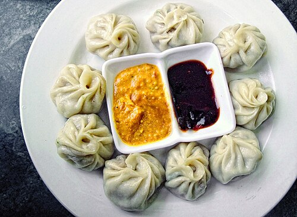

Mo:Mo

Recipe of Mo:Mo
Mo:Mo is one of the most popular food in Nepal and it's
neighboring countries.
I will give you necessary ingredients
and steps to make Mo:Mo
Here are the important ingredients for making chicken Mo:Mo
- Dough
- Chicken meat(500mg)
- 1 medium onion
- 2-3 cloves garlic
- 1 inch piece of ginger
- 1 tbsp of soy sauce
- 1 tsp of cuming power
- salt and pepper
- 1 sbsp oil
The following steps should be followed to make chicken Mo:Mo
- Prepare the dough(use above ingredients)
- Prepare the filling
- Shape the Mo:Mo wrappers
- Fill and fold the Mo:Mo
- Steam the Mo:Mo
- Make the achar(Mo:Mo dipping sauce)
- Last step is to serve the Mo:Mo